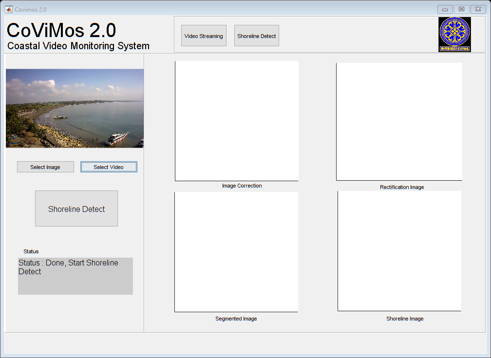

function varargout = index(varargin)
gui_Singleton = 1;
gui_State = struct('gui_Name', mfilename, ...
'gui_Singleton', gui_Singleton, ...
'gui_OpeningFcn', @index_OpeningFcn, ...
'gui_OutputFcn', @index_OutputFcn, ...
'gui_LayoutFcn', [] , ...
'gui_Callback', []);
if nargin && ischar(varargin{1})
gui_State.gui_Callback = str2func(varargin{1});
end
if nargout
[varargout{1:nargout}] = gui_mainfcn(gui_State, varargin{:});
else
gui_mainfcn(gui_State, varargin{:});
end
function index_OpeningFcn(hObject, eventdata, handles, varargin)
axes(handles.axes27);
matlabImage = imread('logounud.png');
image(matlabImage)
axis off
axis image
set(handles.uipanel1,'visible','on');
set(handles.uipanel13,'visible','off');
handles.output = hObject;
guidata(hObject, handles);
function varargout = index_OutputFcn(hObject, eventdata, handles)
varargout{1} = handles.output;
function pushbutton10_Callback(hObject, eventdata, handles)
[ video_file_name,video_file_path ] = uigetfile({'video/*.mp4'},'Pick a video file');
if(video_file_path == 0)
return;
end
input_video_file = [video_file_path,video_file_name];
videoObject = VideoReader(input_video_file);
frame_1 = read(videoObject,1);
axes(handles.axes13);
imshow(frame_1);
drawnow;
rgbSum = double(frame_1);
set(handles.text14,'String','Status : Process TimeX Image');
for frameCount = 3:50
disp(frameCount)
frame = read(videoObject,frameCount);
imshow(frame);
thisFrame = double(read(videoObject, frameCount));
rgbSum = rgbSum + thisFrame;
drawnow;
end
rgbMean = rgbSum / 50;
dst_img=uint8(rgbMean);
imwrite(dst_img,'CitraTimex.jpg','jpg','Comment','My JPEG file')
set(handles.text14,'String','Status : Process Kalibrasi Image');
imageFileNames = {'D:\data\tesis\Riset CoViMoS\Covimos2.0 edit\Covimos2.0\covimos2.0\calibration_pattern\1.jpg',...
'D:\data\tesis\Riset CoViMoS\Covimos2.0 edit\Covimos2.0\covimos2.0\calibration_pattern\2.jpg',...
'D:\data\tesis\Riset CoViMoS\Covimos2.0 edit\Covimos2.0\covimos2.0\calibration_pattern\3.jpg',...
'D:\data\tesis\Riset CoViMoS\Covimos2.0 edit\Covimos2.0\covimos2.0\calibration_pattern\4.jpg',...
'D:\data\tesis\Riset CoViMoS\Covimos2.0 edit\Covimos2.0\covimos2.0\calibration_pattern\5.jpg',...
'D:\data\tesis\Riset CoViMoS\Covimos2.0 edit\Covimos2.0\covimos2.0\calibration_pattern\6.jpg',...
'D:\data\tesis\Riset CoViMoS\Covimos2.0 edit\Covimos2.0\covimos2.0\calibration_pattern\7.jpg',...
'D:\data\tesis\Riset CoViMoS\Covimos2.0 edit\Covimos2.0\covimos2.0\calibration_pattern\8.jpg',...
'D:\data\tesis\Riset CoViMoS\Covimos2.0 edit\Covimos2.0\covimos2.0\calibration_pattern\15.jpg',...
'D:\data\tesis\Riset CoViMoS\Covimos2.0 edit\Covimos2.0\covimos2.0\calibration_pattern\19.jpg',...
'D:\data\tesis\Riset CoViMoS\Covimos2.0 edit\Covimos2.0\covimos2.0\calibration_pattern\20.jpg',...
'D:\data\tesis\Riset CoViMoS\Covimos2.0 edit\Covimos2.0\covimos2.0\calibration_pattern\22.jpg',...
};
[imagePoints, boardSize, imagesUsed] = detectCheckerboardPoints(imageFileNames);
imageFileNames = imageFileNames(imagesUsed);
originalImage = imread(imageFileNames{1});
[mrows, ncols, ~] = size(originalImage);
squareSize = 25;
worldPoints = generateCheckerboardPoints(boardSize, squareSize);
[cameraParams, imagesUsed, estimationErrors] = estimateCameraParameters(imagePoints, worldPoints, ...
'EstimateSkew', false, 'EstimateTangentialDistortion', false, ...
'NumRadialDistortionCoefficients', 2, 'WorldUnits', 'millimeters', ...
'InitialIntrinsicMatrix', [], 'InitialRadialDistortion', [], ...
'ImageSize', [mrows, ncols]);
displayErrors(estimationErrors, cameraParams);
undistortedImage = undistortImage(originalImage, cameraParams);
JJ = undistortImage(dst_img,cameraParams);
imwrite(JJ,'newImage.jpg','jpg','Comment','My JPEG file')
handles.videoObject = JJ;
guidata(hObject,handles);
figure,imshow(JJ),title('Image Correction');
set(handles.text14,'String','Status : Done, Start Shoreline Detect');
function pushbutton11_Callback(hObject, eventdata, handles)
[FileName,FilePath]=uigetfile('*.jpeg', 'Select a Image');
ExPath = [FilePath FileName];
uiwait();
img = imread(ExPath);
axes(handles.axes13);
function pushbutton18_Callback(hObject, eventdata, handles)
set(handles.uipanel1,'visible','off');
set(handles.uipanel13,'visible','on');
videoObject2 = VideoReader('20181016_x264.mp4');
frame_2 = read(videoObject2,1);
axes(handles.axes28);
imshow(frame_2);
drawnow;
for frameCount = 2:videoObject2.NumberOfFrames
frame2 = read(videoObject2,frameCount);
imshow(frame2);
drawnow;
end
warning('off', 'Images:initSize:adjustingMag');
function pushbutton19_Callback(hObject, eventdata, handles)
set(handles.uipanel1,'visible','on');
set(handles.uipanel13,'visible','off');
function pushbutton9_Callback(hObject, eventdata, handles)
imgaddr=strcat('newImage.jpg');
cimg=imgaddr;
axes(handles.axes1);
imshow(imgaddr);
set(handles.text14,'String','Status : Image Rectification');
pause(1);
axes(handles.axes3);
g_rect(imgaddr);
set(handles.text14,'String','Status : Shoreline Extraction.. Please wait');
pause(1);
axes(handles.axes6);
rgb=Mth_HS1;
axes(handles.axes7);
figure,imshow(rgb),title('shoreline Detect');
hImg=imshow(rgb);
metersPerPixel = 5/43;
XDataInCMeters = get(hImg,'XData')*metersPerPixel;
YDataInCMeters = get(hImg,'YData')*metersPerPixel;
set(hImg,'XData',XDataInCMeters,'YData',YDataInCMeters);
set(gca,'XLim',XDataInCMeters,'YLim',YDataInCMeters);
hline = imdistline(gca,[10 10],[10 40]);
api = iptgetapi(hline);
api.setLabelTextFormatter('%02.2f m');
guidata(hObject, handles);
pause(1);
set(handles.text14,'String','Status : Done!');
function Untitled_1_Callback(hObject, eventdata, handles)
function Untitled_2_Callback(hObject, eventdata, handles)
